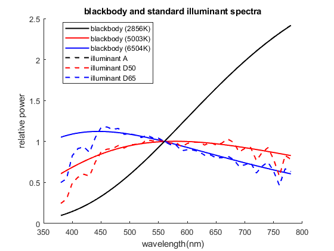
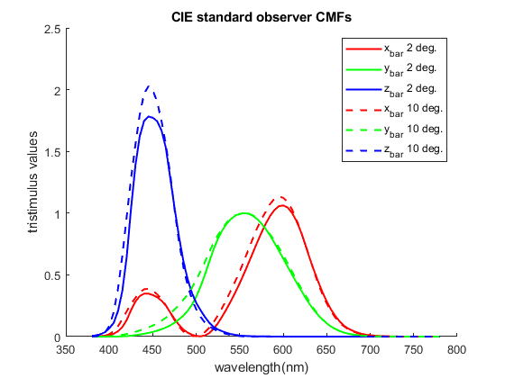
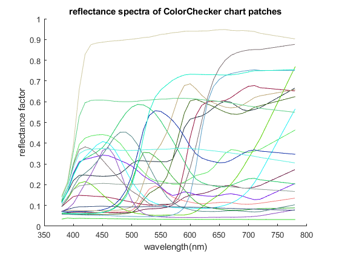
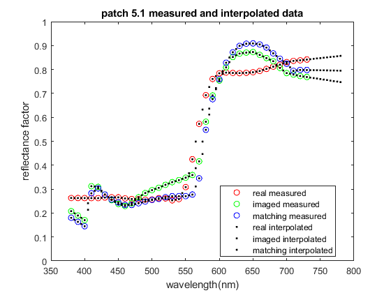
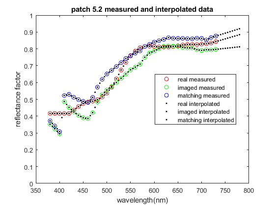
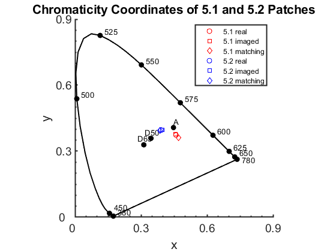

Credits
Team #: 1 Authors: Cooper White & Gian-Mateo Tifone Date: 10/5/2023
Contents
Initialization
clear cie = loadCIEdata;
Project 3 - Step 3
Blackbody and CIE Standard Observer -Data
BB2856K = blackbody(2856, cie.lambda); %Illuminant A's BB BB5003K = blackbody(5003, cie.lambda); %Illuminant D50's BB BB6504K = blackbody(6504, cie.lambda); %Illuminant D65's BB % Find value to normalize index = 37; %Index of the 560nm ANormVal = cie.illA(index, 1); D50NormVal = cie.illD50(index, 1); D65NormVal = cie.illD65(index, 1); % Normalize illANormalized = cie.illA./ANormVal; illD50Normalized = cie.illD50./D50NormVal; illD65Normalized = cie.illD65./D65NormVal; % Blackbody and CIE Standard Observer -Graphs % x-axis cie.lambda; % Plot -> Blackbody figure(1); hold on plot(cie.lambda,BB2856K,'Color',[0,0,0],'LineWidth',1.5) plot(cie.lambda,BB5003K,'Color',[1,0,0],'LineWidth',1.5) plot(cie.lambda,BB6504K,'Color',[0,0,1],'LineWidth',1.5) % Plot -> Standard Illuminants plot(cie.lambda, illANormalized, 'Color',[0,0,0],'LineWidth',1.5,'LineStyle','--'); plot(cie.lambda, illD50Normalized,'Color',[1,0,0],'LineWidth',1.5,'LineStyle','--'); plot(cie.lambda, illD65Normalized,'Color',[0,0,1],'LineWidth',1.5,'LineStyle','--'); hold off % Format plot(s) title('blackbody and standard illuminant spectra') xlabel('wavelength(nm)') ylabel('relative power') xlim([350 800]); ylim([0 2.5]); legend('Location', 'best') %Auto-places Legend legend('blackbody (2856K)','blackbody (5003K)', 'blackbody (6504K)', ... 'illuminant A', 'illuminant D50', 'illuminant D65'); % Plot -> 2-Degree figure(2); hold on plot(cie.lambda,cie.cmf2deg(:,1),'Color',[1,0,0],'LineWidth',1.5) plot(cie.lambda,cie.cmf2deg(:,2),'Color',[0,1,0],'LineWidth',1.5) plot(cie.lambda,cie.cmf2deg(:,3),'Color',[0,0,1],'LineWidth',1.5) % Plot -> 10-Degree plot(cie.lambda,cie.cmf10deg(:,1),'Color',[1,0,0],'LineWidth',1.5,'LineStyle','--') plot(cie.lambda,cie.cmf10deg(:,2),'Color',[0,1,0],'LineWidth',1.5,'LineStyle','--') plot(cie.lambda,cie.cmf10deg(:,3),'Color',[0,0,1],'LineWidth',1.5,'LineStyle','--') hold off % Format plot(s) title('CIE standard observer CMFs') xlabel('wavelength(nm)') ylabel('tristimulus values') xlim([350 800]); ylim([0 2.5]); legend('x_b_a_r 2 deg.','y_b_a_r 2 deg.', 'z_b_a_r 2 deg.', ... 'x_b_a_r 10 deg.', 'y_b_a_r 10 deg.', 'z_b_a_r 10 deg.'); 
Project 3 - Step 4
This function takes Surface reflectance, Color Matching Function, Illumination and converts it to XYZ tristimulus values. refs = Surface reflectance nx1 vector
cmfs = Color matching functions nx3 vector in [x,y,z] order
illum = SPD of light source nx1 vector
%% % This function takes Surface reflectance, Color Matching Function, Illumination and converts it to XYZ tristimulus values. % refs = Surface reflectance nx1 vector % % cmfs = Color matching functions nx3 vector % in [x,y,z] order % % illum = SPD of light source nx1 vector % % <include>ref2XYZ.m</include> % R(λ) x,y,z S(λ) function XYZ = ref2XYZ(refs, cmfs, illum) k = 100 / sum(cmfs(:, 2).*illum); X = k * sum(cmfs(:, 1).*illum.*refs); Y = k * sum(cmfs(:, 2).*illum.*refs); Z = k * sum(cmfs(:, 3).*illum.*refs); XYZ = [X,Y,Z]; end
Project 3 - Step 5
CC_spectra = importdata('ColorChecker_380_780_5nm.txt'); for patch_num = 2:25 CC_XYZs(:,patch_num-1) = ref2XYZ(CC_spectra(:,patch_num),cie.cmf2deg,cie.illD65); end CC_XYZs % Plot ColorChecker figure(3) hold on for patch = 1:size(CC_spectra, 2)-1 plot(cie.lambda, CC_spectra(:, patch +1), 'Color',rand(1,3)) end % Format Plot title('reflectance spectra of ColorChecker chart patches') xlabel('wavelength(nm)') ylabel('reflectance factor') xlim([350 800]); ylim([0 1]); hold off
CC_XYZs =
Columns 1 through 7
11.5145 39.1346 18.3488 11.1492 25.8437 31.7110 37.1457
10.3819 36.5981 19.6332 13.8551 24.3868 43.8600 29.5592
7.1502 27.0564 35.6470 7.4267 45.6142 44.8778 6.5006
Columns 8 through 14
13.8627 29.1328 8.5889 33.9174 46.1864 8.9183 15.0353
12.3179 19.8475 6.4569 44.1533 42.4957 6.4177 24.1079
39.3093 14.9941 15.4745 11.4297 8.6771 32.2736 9.6379
Columns 15 through 21
19.3447 55.8457 29.6768 14.4138 87.8402 57.9621 35.2286
11.3576 58.9726 19.3515 19.9750 92.3781 61.0426 37.0414
5.5526 9.6411 32.2626 39.0008 95.6125 65.4909 40.2256
Columns 22 through 24
19.3492 8.7646 3.2111
20.4708 9.2915 3.3763
22.1545 10.3188 3.9312
 Project 3 - Step 6
This function takes an input XYZ - 3xn vector and returns xyY - 3xn vector - chromaticity coordinates XYZ = trustimulus values, vector
x,y = chromaticity coordinates, vector
Y = Luminance factor
%% % This function takes an input XYZ - 3xn vector % and returns xyY - 3xn vector - chromaticity coordinates % XYZ = trustimulus values, vector % % x,y = chromaticity coordinates, vector % % Y = Luminance factor % % <include>XYZ2xyY.m</include> function xyY = XYZ2xyY(XYZ) X = XYZ(1, :); Y = XYZ(2, :); Z = XYZ(3, :); x = X ./ (X+Y+Z); y = Y ./ (X+Y+Z); xyY = [x;y;Y]; end
Project 3 - Step 7
CC_xyYs = XYZ2xyY(CC_XYZs); CC_xyYs % Lab 3 - Step 8 cm_lams=380:10:730; cm_h_offset = 19; % Import Data and Normalize to 1 - Patch 5.1 data=importdata('5.1_real.sp', ' ', cm_h_offset); patch1.real = data.data/100; cm_h_offset = 18; data=importdata('5.1_imaged.sp', ' ', cm_h_offset); patch1.imaged = data.data/100; data=importdata('5.1_matching.sp', ' ', cm_h_offset); patch1.matching = data.data/100; % Import Data and Normalize to 1 - Patch 5.2 cm_h_offset = 19; data=importdata('5.2_real.sp', ' ', cm_h_offset); patch2.real = data.data/100; cm_h_offset = 18; data=importdata('5.2_imaged.sp', ' ', cm_h_offset); patch2.imaged = data.data/100; data=importdata('5.2_matching.sp', ' ', cm_h_offset); patch2.matching = data.data/100;
CC_xyYs =
Columns 1 through 7
0.3964 0.3807 0.2492 0.3438 0.2696 0.2633 0.5074
0.3574 0.3561 0.2667 0.4272 0.2544 0.3641 0.4038
10.3819 36.5981 19.6332 13.8551 24.3868 43.8600 29.5592
Columns 8 through 14
0.2117 0.4554 0.2814 0.3790 0.4744 0.1873 0.3082
0.1881 0.3102 0.2116 0.4933 0.4365 0.1348 0.4942
12.3179 19.8475 6.4569 44.1533 42.4957 6.4177 24.1079
Columns 15 through 21
0.5336 0.4487 0.3651 0.1964 0.3185 0.3142 0.3132
0.3133 0.4738 0.2381 0.2722 0.3349 0.3309 0.3293
11.3576 58.9726 19.3515 19.9750 92.3781 61.0426 37.0414
Columns 22 through 24
0.3122 0.3089 0.3053
0.3303 0.3275 0.3210
20.4708 9.2915 3.3763
Project 3 - Step 9
Interpolation of Patch data
patch1.Ireal=interp1(cm_lams,patch1.real, cie.lambda(:), "linear", "extrap"); patch1.Iimaged=interp1(cm_lams,patch1.imaged,cie.lambda(:), "linear", "extrap"); patch1.Imatching=interp1(cm_lams,patch1.matching, cie.lambda(:), "linear", "extrap"); patch2.Ireal=interp1(cm_lams,patch2.real, cie.lambda(:), "linear", "extrap"); patch2.Iimaged=interp1(cm_lams,patch2.imaged,cie.lambda(:), "linear", "extrap"); patch2.Imatching=interp1(cm_lams,patch2.matching, cie.lambda(:), "linear", "extrap"); % Plot Figure 4 figure(4) plot(cm_lams, patch1.real, 'o', 'Color', [1,0,0]); hold on plot(cm_lams, patch1.imaged,'o', 'Color', [0,1,0]); plot(cm_lams, patch1.matching,'o', 'Color', [0,0,1]); plot(cie.lambda,patch1.Ireal,'.', 'Color', [0,0,0]); plot(cie.lambda,patch1.Iimaged,'.', 'Color', [0,0,0]); plot(cie.lambda,patch1.Imatching,'.', 'Color', [0,0,0]); % Format plot title('patch 5.1 measured and interpolated data') legend('real measured', 'imaged measured', 'matching measured', ... 'real interpolated', 'imaged interpolated', 'matching interpolated', 'Location','best'); xlabel('wavelength(nm)') ylabel('reflectance factor') xlim([350 800]); ylim([0 1]); hold off % Plot Figure 5 figure(5) plot(cm_lams, patch2.real,'o', 'Color', [1,0,0]); hold on plot(cm_lams, patch2.imaged,'o', 'Color', [0,1,0]); plot(cm_lams, patch2.matching,'o', 'Color', [0,0,1]); plot(cie.lambda,patch2.Ireal,'.', 'Color', [0,0,0]); plot(cie.lambda,patch2.Iimaged,'.', 'Color', [0,0,0]); plot(cie.lambda,patch2.Imatching,'.', 'Color', [0,0,0]); hold off % Format Plot title('patch 5.2 measured and interpolated data') legend('real measured', 'imaged measured', 'matching measured', ... 'real interpolated', 'imaged interpolated', 'matching interpolated', 'Location','best'); xlabel('wavelength(nm)') ylabel('reflectance factor') xlim([350 800]); ylim([0 1]); hold off 
Project 3 - Step 10
%Calculated values for XYZ Patch 1 patch1.CalcrealXYZ = ref2XYZ(patch1.Ireal, cie.cmf2deg, cie.illD50); patch1.CalcimagedXYZ = ref2XYZ(patch1.Iimaged, cie.cmf2deg, cie.illD50); patch1.CalcmatchingXYZ = ref2XYZ(patch1.Imatching, cie.cmf2deg, cie.illD50); %Calculated values for XYZ Patch 2 patch2.CalcrealXYZ = ref2XYZ(patch2.Ireal, cie.cmf2deg, cie.illD50); patch2.CalcimagedXYZ = ref2XYZ(patch2.Iimaged, cie.cmf2deg, cie.illD50); patch2.CalcmatchingXYZ = ref2XYZ(patch2.Imatching, cie.cmf2deg, cie.illD50); %Reading in the ColorMunki XYZ data and assiging to struct real_measuredXYZ = readmatrix('5_XYZ_Labs_Real.txt'); imaged_measuredXYZ = readmatrix('5_XYZ_Labs_imaged.txt'); matching_measuredXYZ = readmatrix('5_XYZ_Labs_matching.txt'); %Patch 1 patch1.CMreal = real_measuredXYZ(1,2:4); patch1.CMimaged = imaged_measuredXYZ(1,2:4); patch1.CMmatching = matching_measuredXYZ(1,2:4); %Patch 2 patch2.CMreal = real_measuredXYZ(2,2:4); patch2.CMimaged = imaged_measuredXYZ(2,2:4); patch2.CMmatching = matching_measuredXYZ(2,2:4); %Table 1 -Header fprintf('%s\n\n',"Measured and calculated tristumulus values"); fprintf('%48s\n', "patch 5.1"); fprintf('%30s %37s\n', "measured", "calculated"); fprintf('%14s %12s %10s %12s %12s %10s\n', "X", "Y", "Z", "X", "Y", "Z"); %Table 2 -Data fprintf('%8s %2.6f %2.6f %2.6f %s', 'real',patch1.CMreal, ' '); fprintf('%2.6f %2.6f %2.6f\n', patch1.CalcrealXYZ); fprintf('%8s %2.6f %2.6f %2.6f %s', 'imaged', patch1.CMimaged, ' '); fprintf('%2.6f %2.6f %2.6f\n', patch1.CalcimagedXYZ); fprintf('%8s %2.6f %2.6f %2.6f %s', 'matching', patch1.CMmatching,' '); fprintf('%2.6f %2.6f %2.6f\n\n\n', patch1.CalcmatchingXYZ); %Table 2 -Header fprintf('%48s\n', "patch 5.2"); fprintf('%30s %37s\n', "measured", "calculated"); fprintf('%14s %12s %10s %12s %12s %10s\n', "X", "Y", "Z", "X", "Y", "Z"); %Tabel 2 -Data fprintf('%8s %2.6f %2.6f %2.6f %s', 'real',patch2.CMreal, ' '); fprintf('%2.6f %2.6f %2.6f\n', patch2.CalcrealXYZ); fprintf('%8s %2.6f %2.6f %2.6f %s', 'imaged', patch2.CMimaged, ' '); fprintf('%2.6f %2.6f %2.6f\n', patch2.CalcimagedXYZ); fprintf('%8s %2.6f %2.6f %2.6f %s', 'matching', patch2.CMmatching,' '); fprintf('%2.6f %2.6f %2.6f\n\n\n', patch2.CalcmatchingXYZ);
Measured and calculated tristumulus values
patch 5.1
measured calculated
X Y Z X Y Z
real 59.568041 48.408812 21.659977 59.521056 48.423787 21.663595
imaged 58.532704 48.103032 21.160113 58.506612 48.124684 21.184821
matching 57.439869 44.116577 20.622835 57.410502 44.149359 20.631810
patch 5.2
measured calculated
X Y Z X Y Z
real 72.815908 73.733772 39.540661 72.794989 73.713088 39.552705
imaged 68.952098 68.919208 35.522153 68.941246 68.910134 35.571275
matching 75.138289 76.509450 43.053816 75.128645 76.498828 43.091674
Project 3 - Step 11
%CMunki xyY patch 1 patch1.CMrealxyY=XYZ2xyY(patch1.CMreal'); patch1.CMimagedxyY = XYZ2xyY(patch1.CMimaged'); patch1.CMmatchingxyY = XYZ2xyY(patch1.CMmatching'); %CMunki xyY patch 2 patch2.CMrealxyY=XYZ2xyY(patch2.CMreal'); patch2.CMimagedxyY = XYZ2xyY(patch2.CMimaged'); patch2.CMmatchingxyY = XYZ2xyY(patch2.CMmatching'); %Calculated xyY patch 1 patch1.CalcrealxyY = XYZ2xyY(patch1.CalcrealXYZ'); patch1.CalcimagedxyY = XYZ2xyY(patch1.CalcimagedXYZ'); patch1.CalcmatchingxyY = XYZ2xyY(patch1.CalcmatchingXYZ'); %Calculated xyY patch 2 patch2.CalcrealxyY = XYZ2xyY(patch2.CalcrealXYZ'); patch2.CalcimagedxyY = XYZ2xyY(patch2.CalcimagedXYZ'); patch2.CalcmatchingxyY = XYZ2xyY(patch2.CalcmatchingXYZ'); % Table 1 -Header fprintf('%s\n\n',"Measured and calculated tristumulus values"); fprintf('%48s\n', "patch 5.1"); fprintf('%30s %37s\n', "measured", "calculated"); fprintf('%13s %12s %10s %10s %12s %10s\n', "x", "y", 'Y', 'x', 'y', 'Y'); %Table 1 -Data fprintf('%8s %2.6f %2.6f %2.6f %s', 'real', patch1.CMrealxyY, ' '); fprintf('%2.6f %2.6f %2.6f\n', patch1.CalcrealxyY); fprintf('%8s %2.6f %2.6f %2.6f %s', 'imaged', patch1.CMimagedxyY, ' '); fprintf('%2.6f %2.6f %2.6f\n', patch1.CalcimagedxyY); fprintf('%8s %2.6f %2.6f %2.6f %s', 'matching', patch1.CMmatchingxyY,' '); fprintf('%2.6f %2.6f %2.6f\n\n\n', patch1.CalcmatchingxyY); %Table 2 -Header fprintf('%48s\n', "patch 5.2"); fprintf('%30s %37s\n', "measured", "calculated"); fprintf('%13s %12s %10s %10s %12s %10s\n', "x", "y", 'Y', 'x', 'y', 'Y'); %Table 2 -Data fprintf('%8s %2.6f %2.6f %2.6f %s', 'real', patch2.CMrealxyY, ' '); fprintf('%2.6f %2.6f %2.6f\n', patch2.CalcrealxyY); fprintf('%8s %2.6f %2.6f %2.6f %s', 'imaged', patch2.CMimagedxyY, ' '); fprintf('%2.6f %2.6f %2.6f\n', patch2.CalcimagedxyY); fprintf('%8s %2.6f %2.6f %2.6f %s', 'matching', patch2.CMmatchingxyY,' '); fprintf('%2.6f %2.6f %2.6f\n\n\n', patch2.CalcmatchingxyY);
Measured and calculated tristumulus values
patch 5.1
measured calculated
x y Y x y Y
real 0.459499 0.373419 48.408812 0.459238 0.373616 48.423787
imaged 0.458017 0.376405 48.103032 0.457740 0.376515 48.124684
matching 0.470128 0.361081 44.116577 0.469840 0.361312 44.149359
patch 5.2
measured calculated
x y Y x y Y
real 0.391293 0.396226 73.733772 0.391243 0.396177 73.713088
imaged 0.397663 0.397473 68.919208 0.397533 0.397354 68.910134
matching 0.385915 0.392958 76.509450 0.385831 0.392868 76.498828
Project 3 - Step 12
Plot chromaticity skeleton
plot_chrom_diag_skel; % Plot Patch 1 plot(patch1.CalcrealxyY(1,1),patch1.CalcrealxyY(2,1),'o','Color', [1,0,0], 'DisplayName', '5.1 real'); plot(patch1.CalcimagedxyY(1,1),patch1.CalcimagedxyY(2,1),'square','Color', [1,0,0], 'DisplayName', '5.1 imaged'); plot(patch1.CalcmatchingxyY(1,1),patch1.CalcmatchingxyY(2,1),'diamond','Color', [1,0,0], 'DisplayName', '5.1 matching'); % Plot Patch 2 plot(patch2.CalcrealxyY(1,1),patch2.CalcrealxyY(2,1),'o','Color', [0,0,1], 'DisplayName', '5.2 real'); plot(patch2.CalcimagedxyY(1,1),patch2.CalcimagedxyY(2,1),'square','Color', [0,0,1], 'DisplayName', '5.2 imaged'); plot(patch2.CalcmatchingxyY(1,1),patch2.CalcmatchingxyY(2,1),'diamond','Color', [0,0,1],'DisplayName', '5.2 imaged'); % Format Plot title('Chromaticity Coordinates of 5.1 and 5.2 Patches') legend({'', '', '','','','','','','','','','','','', ... '5.1 real', '5.1 imaged', '5.1 matching', ... '5.2 real', '5.2 imaged', '5.2 matching'}, ... 'Location', 'northeast', 'FontSize',9)
Feedback
% i.) % Cooper and Gian-Mateo both coded the project; Cooper and Gian-Mateo spend % several adruous hours debugging together % ii.) % We had to reference google for some fprintf tips, and for formatting the % shapes of the points in our plots for interpolated vs real data. %iii.) %Structs were QUITE valuable as it made our workspace more streamlined, and %cut down on confusing variable notation %iv.) % no improvments needed, just took a while, and caffeine